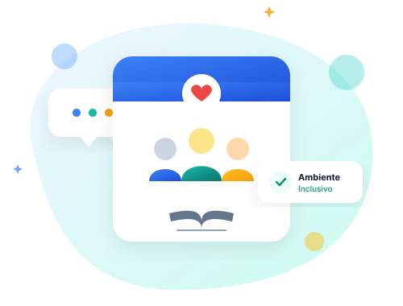
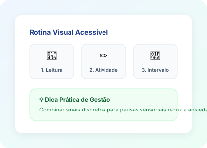

Estudantes
Entenda melhor suas emoções, saiba como lidar com a sobrecarga, comunique o que sente e descubra quem pode te apoiar.
Guia do Estudante →Uma plataforma acessível para aproximar estudantes, professores e famílias, oferecendo caminhos práticos para construir uma escola mais empática, compreensiva e inclusiva.

A inclusão é uma construção coletiva. Encontre conteúdos preparados para sua realidade:
Entenda melhor suas emoções, saiba como lidar com a sobrecarga, comunique o que sente e descubra quem pode te apoiar.
Guia do Estudante →Estratégias pedagógicas práticas, planejamento de ambiente sensorial, previsibilidade e orientações para situações reais.
Guia do Professor →Compreenda o espectro com clareza, desmistifique estigmas e conheça as diferentes formas de comunicação e sensorialidade.
Conhecer o Espectro →Orientações para fortalecer o diálogo entre casa e escola e identificar serviços de apoio psicossocial.
Ver Rede de Apoio →O Transtorno do Espectro Autista (TEA) é uma condição do neurodesenvolvimento com manifestações únicas em cada indivíduo.
Formas diversas de expressar e compreender informações verbais, visuais e não verbais.
Estímulos como sons altos, luz intensa ou aglomerações podem ser processados com alta intensidade.
Antecipar mudanças na rotina escolar reduz a insegurança e favorece a concentração.
O espectro é plural. O que auxilia um estudante pode precisar de ajustes para outro.
O educador não precisa ter todas as respostas. Observar com empatia, escutar e adaptar são atitudes fundamentais.

Dúvidas sobre como agir no dia a dia? Conheça abordagens baseadas em respeito e acolhimento:
Permita pausas em locais mais calmos, incentive o uso de abafadores de ruído e ofereça um momento de autorregulação.
Antecipe transições sempre que possível usando avisos visuais ou lembretes 5 minutos antes da mudança.
Faça convites gentis sem pressionar. Proponha atividades estruturadas ou em pequenos grupos com temas de interesse mútuo.
Combine sinais discretos com o estudante (um cartão colorido, um bilhete ou gesto combinado) para avisar quando precisar de apoio.
Apoio emocional e inclusão se constroem em rede. Identifique seus pontos de confiança:
Quando o sofrimento for intenso ou persistente, procurar a orientação pedagógica da escola ou um serviço de saúde de referência é o caminho mais seguro e responsável.
Informações fundamentadas em diretrizes educacionais e de saúde pública: